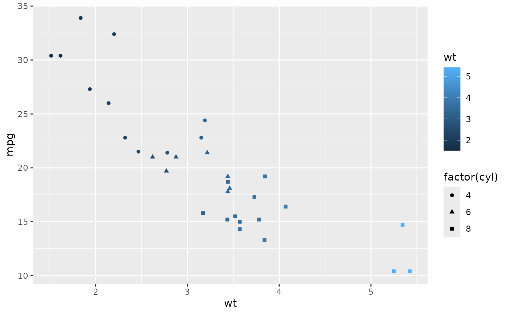
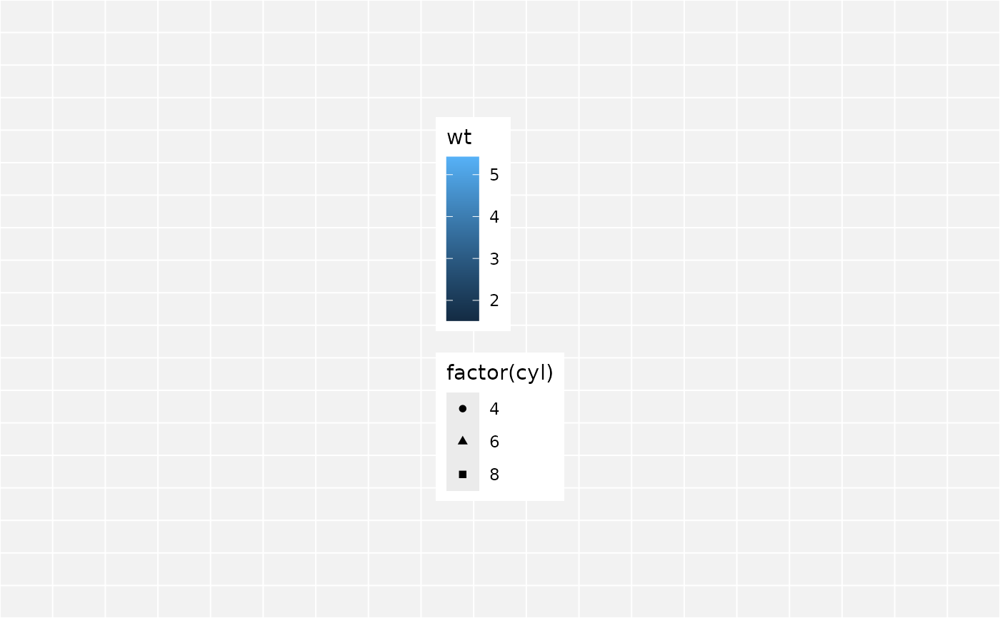
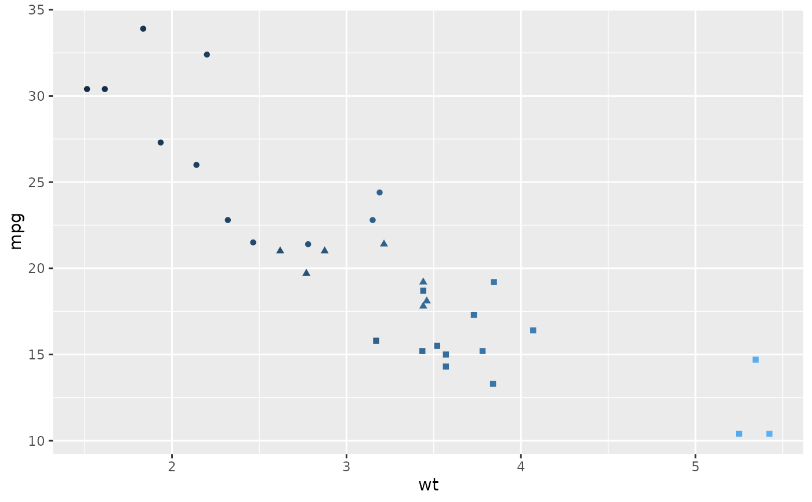

A few handy tools for working with ggplot2.
Details
The ggplot2_extract_legend function returns a list with the first
element being the legend and the second the original plot with the legend
omitted.
Examples
# a simple plot
my_plot <-
ggplot2::ggplot(mtcars) +
ggplot2::aes(x = wt, y = mpg, color = wt, shape = factor(cyl)) +
ggplot2::geom_point()
my_plot

# extract the legend. the return object is a list with two elements, the first
# element is the legend, the second is the original plot sans legend.
temp <- ggplot2_extract_legend(my_plot)
# view just the legend. This can be done via a call to the object or using
# plot or print.
temp

plot(temp[[1]])
# the original plot without the legened
plot(temp[[2]])
